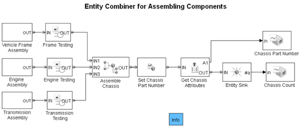

Entity Combiner for Assembling Components
Contents
Description
This model illustrates how to use the Entity Combiner block to model synchronization and aggregation, as well as how to manage data when aggregating entities.
The three independent generators generate frames, engines, and transmissions at different rates. When one of each component is ready, the block labeled Assemble Chassis combines them to form an entity representing a chassis. This block is an instance of the Entity Combiner block.
The block labeled Set Chassis Part Number assigns to the chassis a part number derived from the part numbers of the constituent frame, engine, and transmission parts. The chassis also retains serial number attributes of the constituent parts.
